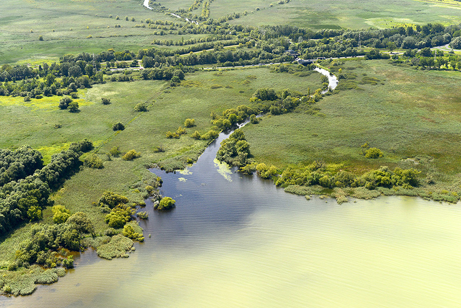
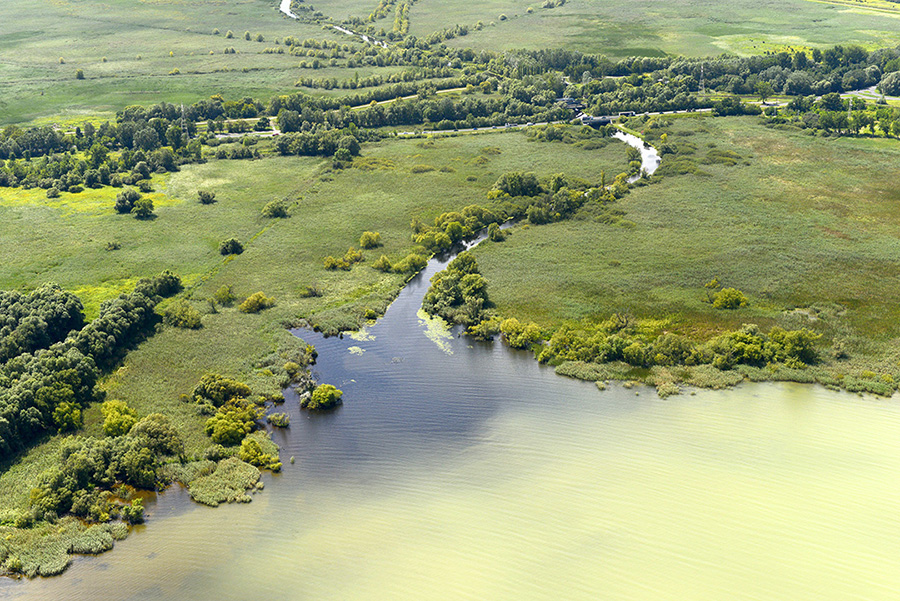

Velencei-tó
Velencei-tó Magyarország harmadik legnagyobb természetes tava. Kedvező természeti és földrajzi adottságainak, valamint a mederszabályzásnak
köszönhetően a Balatonhoz hasonlóan hazánk legkedveltebb üdülőhelyeinek egyike.
Területe 26 km², a felület harmada nádassal borított. A napsütés hatására, valamint a sekély, átlagosan 1,5 m-es mélysége miatt Európa egyik
legmelegebb tava: a víz hőmérséklete elérheti a 26-28 °C-ot is.
A Velencei-tó ásványi anyagokban (nátrium és magnézium) gazdag, kiváló vize a kimerült szervezetet felfrissíti, regenerálja. A fürdésen kívül a
reumatikus fájdalmak enyhítésére is alkalmas.


 
